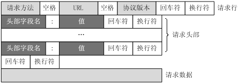
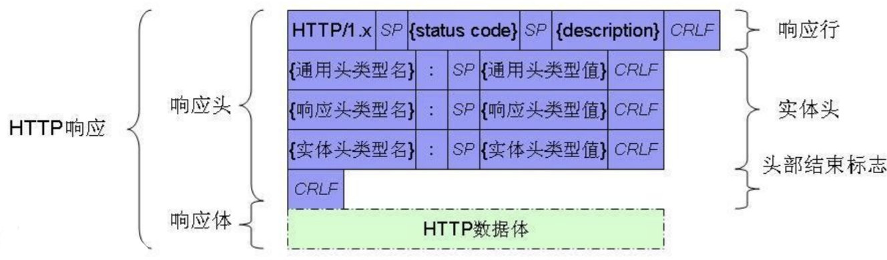

应用层概述
为网络应用（主机上正在运行的进程）提供一个与表示层交互的接口。
协议
基于TCP的应用层协议
- HTTP: (Hypertex Transport Protocol, 超文本传输协议 ) 从web服务器传输超文本到本地浏览器。
- FTP: (File Transfer Protocol，文件传输协议) 用于下载文件、上传主页，使用21端口。
- Telnet: (远端登录协议) 基于DOS模式下的远程连接到计算机的通信服务，使用23端口。
- SMTP: (Simple Mail Transmission Protocol, 简单邮件传输协议) 用于发送邮件，使用25端口。
- POP3: 用于接收邮件，只要主机有使用POP3协议的程序(e.g. Foxmail/Outlook）就可以收到例如163邮箱的邮件了，使用110端口。
基于UDP的应用层协议
- DNS: (Domain Name System, 域名解析服务) 用于将域名（网址）转换为IP地址，使用53号端口。
- SNMP: (Simple Network Management System, 简单网络管理协议) 用来管理IP网络的网络节点（服务器、交换机、路由器、HUBs等）。通过SNMP接收随机消息以及事件报告，网络管理系统能获知网络出现的问题，并规划网络增长。SNMP的前身是简单网关监控协议SGMP。（由于网络设备很多，基于UDP的无连接服务就体现出优势），使用161号端口。
- TFTP: (Trival File Transfer Protocol, 简单文件传输协议) 。用于客户机和服务器之间简单的开销不大的文件的传输，只能从文件服务器上读写文件，不具备FTP所具有的一些功能，如不能列出目录、不能进行验证，传输8位数据。使用69端口。
HTTP
HTTP 请求
http请求报文如下。（图来源CSDN）

请求方法
- 请求方法的幂等性：一个方法重复执行多次，产生的效果是一样的，那么这个方法就是幂等的。
- 请求方法的安全性：不会改变资源的方法是安全的，有GET，HEAD，OPTIONS。
HTTP 请求方法有8种：
| 请求方法 | 含义 | 幂等性 |
|---|---|---|
| GET | 完整请求一个资源。不对服务器产生任何影响 | 是 |
| HEAD | 和GET类似，区别在于仅请求响应首部，不需要传输任何实际内容。 | 是 |
| OPTIONS | 返回请求的资源所支持的方法。 | 是 |
| PUT | 上传文件，将实体部分的数据直接替换到服务器的资源上。 | 是 |
| PATCH | 对文件内容做部分修改。 | 否 |
| POST | 提交表单。这种方法会影响服务器。 | 否 |
| DELETE | 删除资源。 | 是 |
| TRACE | 要求目标服务器返回原是的HTTP请求的内容，可用来查看中间服务器对HTTP请求的影响，可用来追踪一个资源请求中间所经过的代理。 |
HTTP响应
http响应报文如下，包括响应头与响应体两部分。（图来源百度百科）

状态码
状态码（status code）和状态码描述（description）位于HTTP响应报文的响应行（status line）中。
| 状态类型 | 状态码&描述 | 含义 |
|---|---|---|
| 1XX 信息 | ||
| 1XX是一种临时状态，表示接收了消息，仍在处理中，常用于调试场景。 | ||
| 100 Continue | 通知客户端部分请求已经被服务端接收，客户端应继续发送请求的剩余部分。 | |
| 2XX 成功 | ||
| 200 Ok | 请求成功，报文中包含实体主体。类似于做问答题 | |
| 204 No Content | 请求成功，但报文中不包含实体主体。类似于做判断题 | |
| 206 Partial Content | 请求GET的资源是服务器资源的一部分，那么响应报文则返回请求的那一部分的资源。例如下载场景的断点续传。 | |
| 3XX重定向 | ||
| 请求返回301 302 303 时，几乎所有浏览器都会把原先的POST请求改为GET请求。 | ||
| 301 Moved Permanently | 资源被永久重定向，并返回重定向后的新URL | |
| 302 Move Temporarily | 资源临时重定向，返回临时的URL | |
| 303 See Other | 和302类似，并增加了一个附加条件，需要用GET方法访问临时重定向的URL,且303响应禁止被缓存。 | |
| 304 Not Modified | 通知客户端资源未改变，可直接使用本地缓存，且服务端不会返回实体主体（相当于重定向到本地缓存）这种响应通常是请求带有附加条件，如请求一段时间内未变更的资源。 | |
| 307 Temporary Redirect | 与302类似，区别在于禁止将POST方法转为GET方法。 | |
| 4XX客户端错误 | ||
| 客户端出错导致请求无法被处理 | ||
| 400 Bad Request | 请求中有语法或参数错误 | |
| 401 Unauthorized | 请求头中Authorization身份认证字段有误，未授权 | |
| 403 Forbidden | 无访问权限，服务器拒绝了请求，具体原因在响应报文实体主体中给出，也可能不给出。 | |
| 404 Not Found | 请求的资源未找到 | |
| 5XX服务端错误 | ||
| 500 Internal Server Error | 内部服务器故障 | |
| 502 Bad Gateway | 作为代理（客户端和服务端的中转，转发双方的请求，使用http协议）或网关（与代理类似，区别在于与源服务器之间可以使用非http协议）的服务器尝试执行请求时，从上游服务器接收到无效的响应。 | |
| 503 Service Unavailable | 服务器由于维护、升级、过载等原因暂时无法响应 | |
| 504 Gateway Timeout | 作为网管或代理的服务器访问超时。 | |
HTTPS
cookie v.s. session
- cookie存储在浏览器上，最大存储量为4KB。session存储在服务器端，大小无限制。
- cookie可以轻松访问，但是session不能，因此session更安全。
- 设置cookie时间可使cookie过期，而删除回话需要执行session destroy操作。